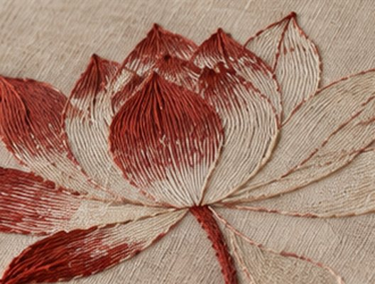
Thêu tay
Hand embroidery
Long-and-short stitches that let one colour fade into another. I love how a petal only becomes a petal after hundreds of tiny, patient decisions.
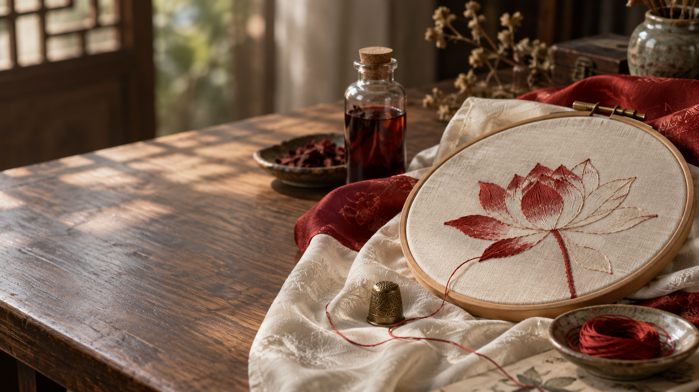
Away from tests and timetables, this is where my hands go: silk on a hoop, a needle of red thread, a jar of colour steeped from plants. These are the things I love — quietly, patiently, and for their own sake.
I grew up seeing silk as something precious that lived in grandmothers' wardrobes — áo dài folded with care, scarves kept for Tết. Only later did I realise how much life is woven into a single length of it.
Silk is where the two halves of me meet. The part that loves chemistry wonders how a protein fibre can shine like that, hold colour for centuries, and still feel cool against skin. The part that loves making things simply wants to sit by a window and stitch a lotus, one strand at a time.
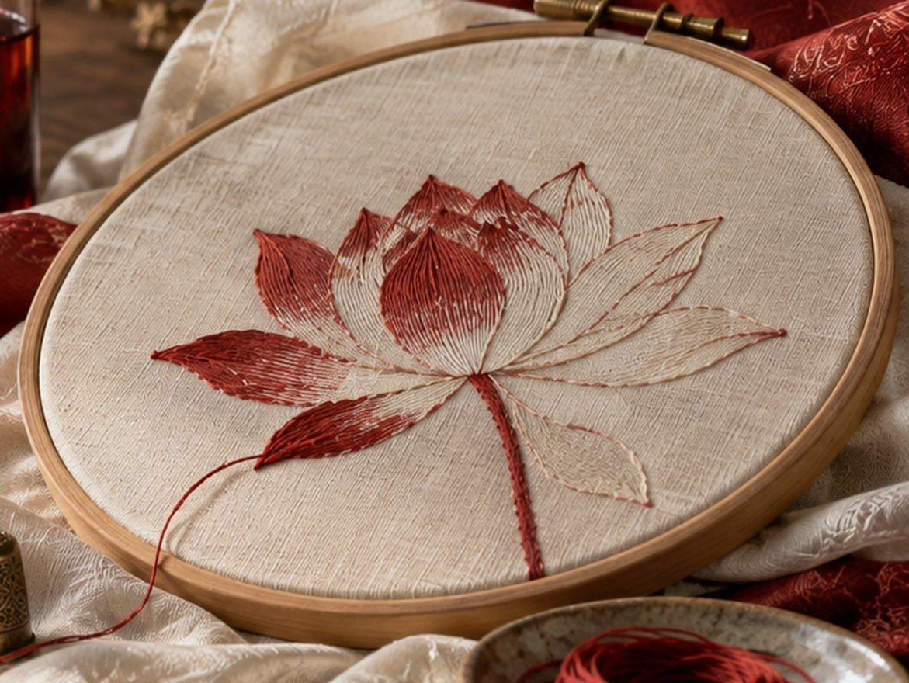
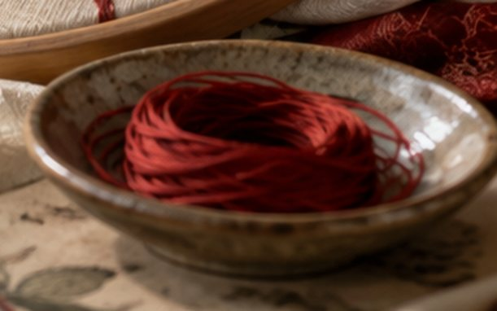
None of these are about winning anything. They are what I reach for on a free afternoon.

Long-and-short stitches that let one colour fade into another. I love how a petal only becomes a petal after hundreds of tiny, patient decisions.
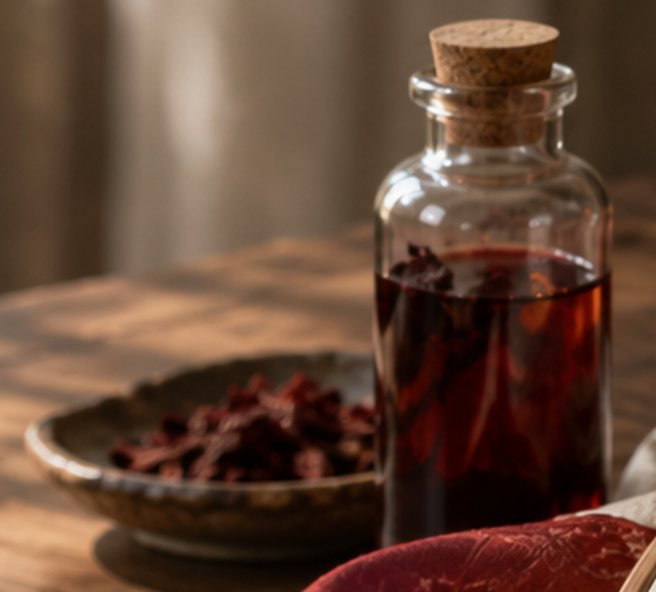
Steeping petals, bark and roots and watching the water turn. Every batch is a little different — and that unpredictability is exactly what I enjoy.
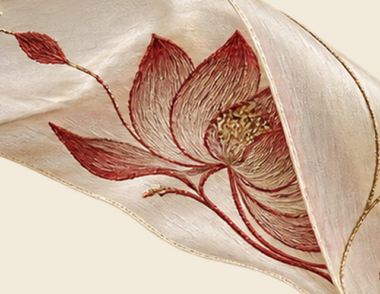
My favourite thing to stitch. It grows out of mud and still opens clean — a quiet Vietnamese idea of grace that I return to again and again.
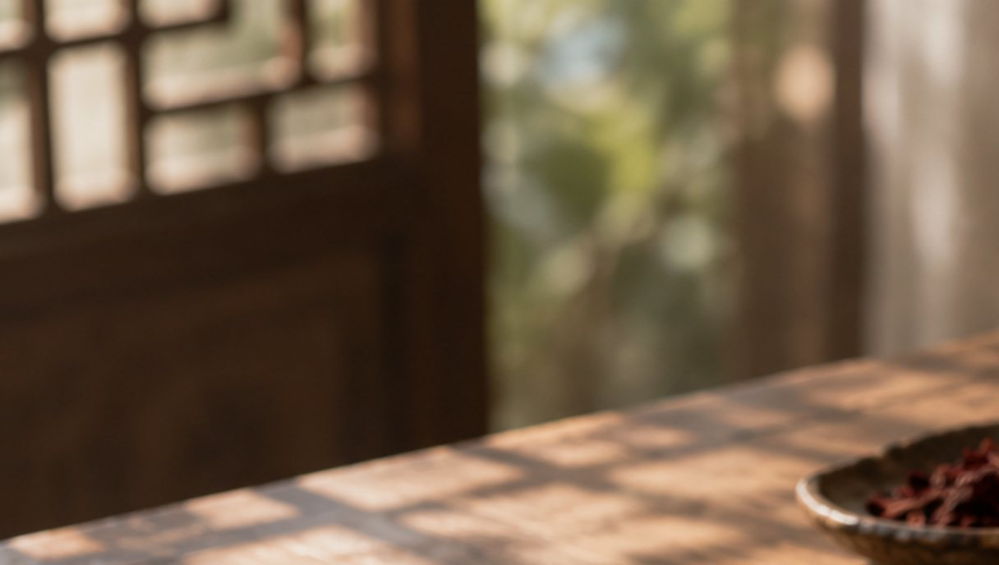
Calligraphy taught me to slow my breathing before a stroke. Ink on silk behaves differently from ink on paper, and I am endlessly curious about why.
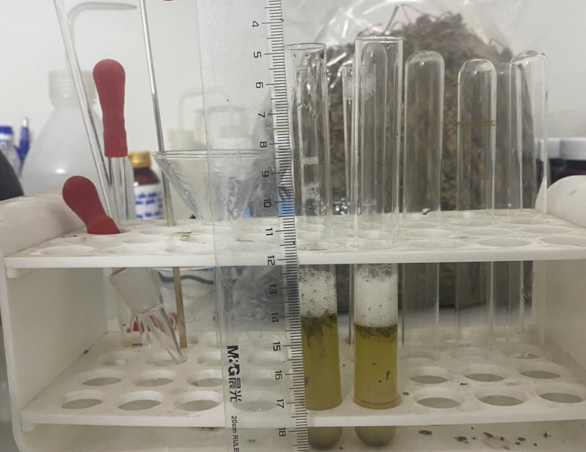
Fibroin, sericin, tannins, mordants — the vocabulary of why silk shines and why some colours last while others fade. Chemistry makes the craft even more beautiful to me.
Reading about silk garments across Vietnamese dynasties and sharing those stories online — how a colour, a pattern or a weave can say who someone was.
Details I love looking at — tap any image to see it larger.
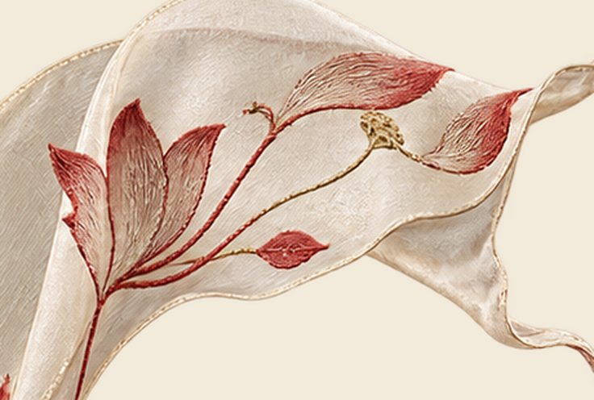
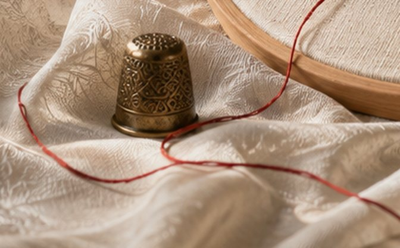
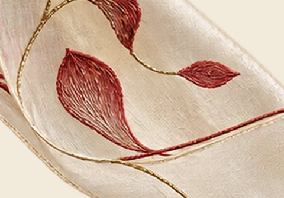
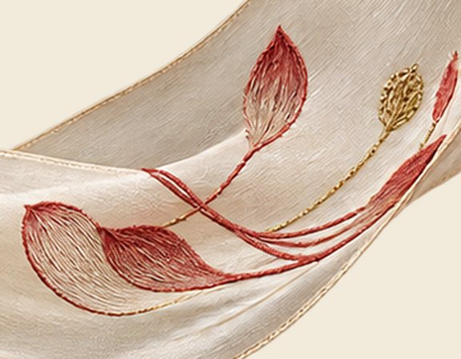
I run the fabric between my fingers first. Some silk is crisp, some drapes like water — each one asks for a different kind of stitch.
Usually a lotus, a leaf, a curling stem. I sketch lightly and leave space for the thread to change the plan.
Some days I use ready thread; on others I try dyeing my own with plant material and a mordant, then wait to see what shade appears.
Long-and-short stitches, blending light into dark. This is the part where time disappears.
I hold the hoop up to the window. The way light moves across silk is the whole reason I keep doing this.
Traditional dyes that coloured silk long before synthetic pigments — the shades I most want to explore.
“Every stitch is a small act of remembering — of hands, of plants, of the people who wore silk before me.”Thái Hồng Quỳnh Chi